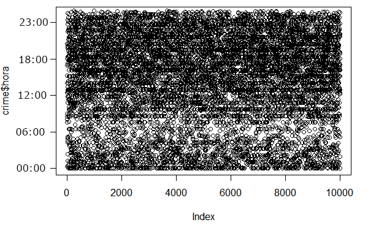
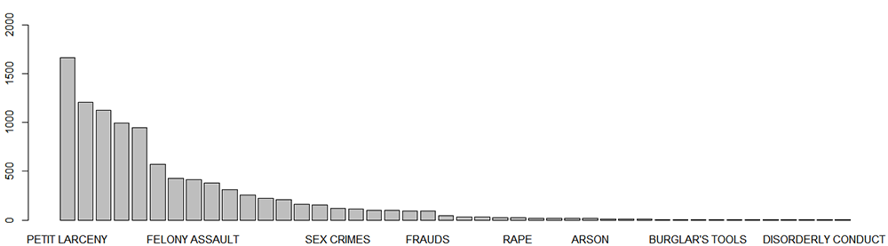
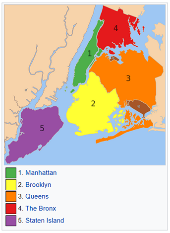
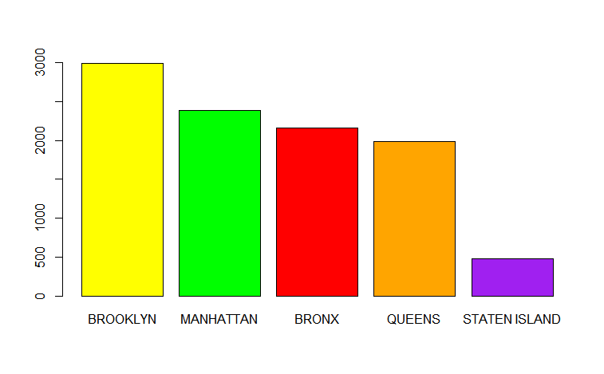

INTRODUÇÃO
Mineração de dados em base criminal da cidade de Nova York
Bruno Padovese, Flavio gabriel 22/04/2018
Este estudo foca em apresentar a base de dados de crimes da polícia de Nova York, expor as possibilidades
de exploração e mineração deste dado e utilizar através das linguagens
R e
Python algoritmos úteis na prática.
Nossa principal motivação é a criticidade e a importância que este dado
nos traz e como um bom tratamento pode extrair frutos valiosos que podem além de salvar tempo,
dinheiro e recursos diversos, podem salvar a coisa mais importante: vidas.
Objetivo faseado:
- Coletar os dados de todas as ocorrências policiais.
- Entender o dado e obter informações básicas.
- Calcular previsões com base no horário, tipo do crime e localização.
- Entregar um mapa com os locais prováveis de novos crimes.
Modelos abordados: (REVISAR NO FINAL)
- Uso de modelos preditivo supervisionado utilizando modelos de classificação como o KNN ou algoritmos de arvore de decisão.
- K-medias para agrupamento dos dados
Resultado esperado:
- Maior eficácia no combate de crimes.
- Rondas policiais mais assertivas.
- Predições e prevenções eficazes.
- Economia em recursos humanos de NYPD.
- Economia financeira para a cidade de NY.
A BASE
Sobre a NYC Open Data
Dado aberto para todos os moradores de Nova York. Onde você pode encontrar pontos de Wi-Fi púbicos no seu bairro? Que tipo de árvore são essas na frente do seu escritório? Aprenda sobre o lugar que você vive, trabalha e curte. Este é o slogan do NYC Open Data, uma iniciativa da cidade de Nova York onde são disponibilizados dados de diversos tipos, tamanhos e curiosidades. A iniciativa se tornou tão popular e válida que acabou gerando muitas disputas pelo resultado, veteranos experientes sobre diversos assuntos e tecnologias como disponibilização de APIs para consumo. Não é necessário dizer que isso tudo gerou muitos benefícios para a cidade e os moradores de Nova York, né?
Amostra
| CMPLNT_NUM | CMPLNT_FR_DT | CMPLNT_FR_TM | CMPLNT_TO_DT | CMPLNT_TO_TM | RPT_DT | KY_CD | OFNS_DESC | PD_CD | PD_DESC | CRM_ATPT_CPTD_CD | LAW_CAT_CD | JURIS_DESC | BORO_NM | ADDR_PCT_CD | LOC_OF_OCCUR_DESC | PREM_TYP_DESC | PARKS_NM | HADEVELOPT | X_COORD_CD | Y_COORD_CD | Latitude | Longitude | Lat_Lon |
|---|---|---|---|---|---|---|---|---|---|---|---|---|---|---|---|---|---|---|---|---|---|---|---|
| 801353533 | 8/13/2014 | 18:45:00 | #N/D | #N/D | 8/13/2014 | 359 | OFFENSES AGAINST PUBLIC ADMINI | 759 | PUBLIC ADMINISTATION,UNCLASS M | COMPLETED | MISDEMEANOR | N.Y. POLICE DEPT | QUEENS | 109 | #N/D | STREET | #N/D | #N/D | 1031211 | 216309 | 40,76027822 | -73,83048545 | (40.760278216, -73.830485448) |
| 802598956 | 7/10/2014 | 14:55:00 | 7/10/2014 | 15:04:00 | 7/10/2014 | 235 | DANGEROUS DRUGS | 567 | MARIJUANA, POSSESSION 4 & 5 | COMPLETED | MISDEMEANOR | N.Y. HOUSING POLICE | MANHATTAN | 23 | OPPOSITE OF | RESIDENCE - PUBLIC HOUSING | #N/D | #N/D | 999584 | 230371 | 40,79898611 | -73,94461787 | (40.798986105, -73.944617869) |
| 531964428 | 3/5/2014 | 09:00:00 | 3/18/2014 | 00:01:00 | 3/19/2014 | 578 | HARRASSMENT 2 | 638 | HARASSMENT,SUBD 3,4,5 | COMPLETED | VIOLATION | N.Y. POLICE DEPT | BROOKLYN | 78 | INSIDE | RESIDENCE-HOUSE | #N/D | #N/D | 989250 | 180623 | 40,66245193 | -73,98197933 | (40.662451925, -73.981979329) |
| 233493919 | 3/6/2014 | 11:30:00 | #N/D | #N/D | 3/6/2014 | 109 | GRAND LARCENY | 421 | LARCENY,GRAND FROM VEHICLE/MOTORCYCLE | COMPLETED | FELONY | N.Y. POLICE DEPT | MANHATTAN | 9 | FRONT OF | STREET | #N/D | #N/D | 988895 | 203186 | 40,72438234 | -73,98324335 | (40.72438234, -73.983243346) |
| 907483184 | 7/15/2015 | 06:45:00 | #N/D | #N/D | 7/15/2015 | 344 | ASSAULT 3 & RELATED OFFENSES | 101 | ASSAULT 3 | COMPLETED | MISDEMEANOR | N.Y. POLICE DEPT | BRONX | 44 | INSIDE | RESIDENCE - APT. HOUSE | #N/D | #N/D | 1004017 | 242094 | 40,83115365 | -73,92857217 | (40.831153652, -73.928572172) |
ENTENDENDO O DADO
Padrões e primeiras abordagens
Histograma, curva normal,m media, mediana, moda, boxplot, summary, descvio padrao, intervalo confianca, correlacao, regressao linear
Incidência de crimes por horário
Incidência de crimes por categoria
Incidência de crimes por bairros
|  |  |
|---|
Incidência de status de crimes

MODELOS PREDITIVOS
Algoritmos para a favor da prevenção de crimes
knn, arvore de decisao, k-medias...